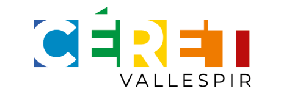
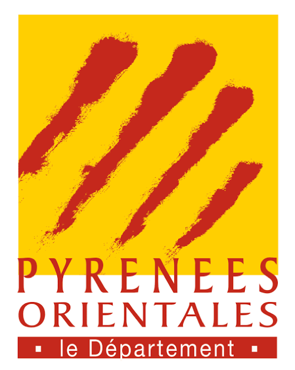
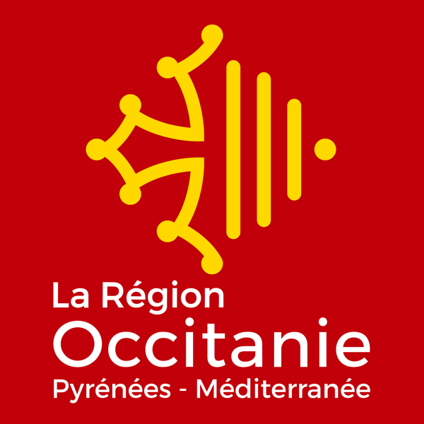
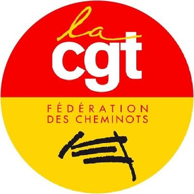
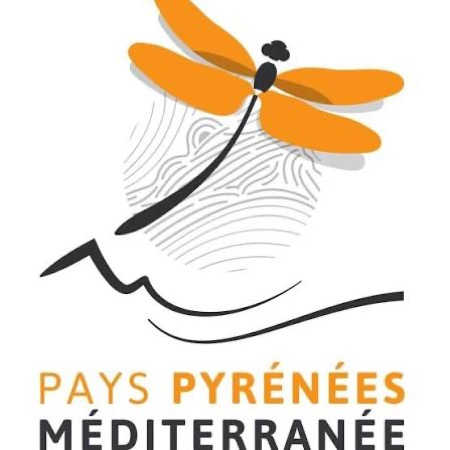
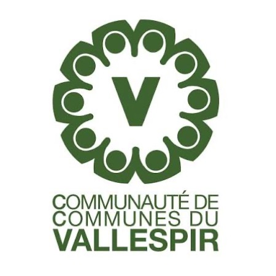
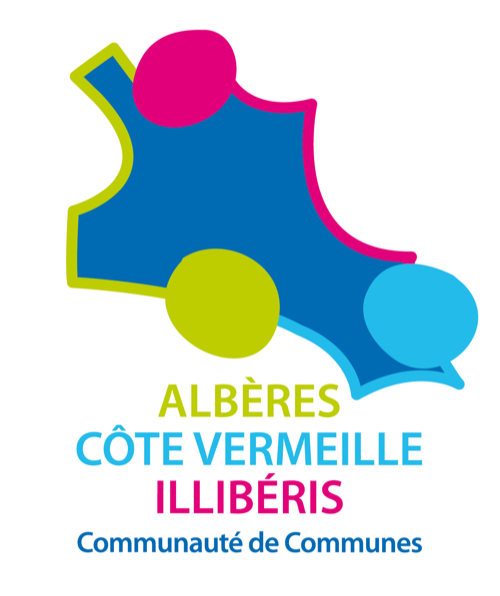

Le train direct Perpignan / Céret
Ensemble, redonnons vie à la ligne ferroviaire historique du Vallespir. Un transport écologique, économique et au service de tous : l'agglomération de Perpignan, les Albères, les Aspres et le Vallespir.
Un projet, quatre bonnes raisons
La réouverture Perpignan-Céret, c'est gagnant pour le territoire.
Écologique
−85 % d'émissions de CO₂ entre une voiture thermique et le TER. Jusqu'à 4 500 trajets routiers évités chaque jour.
Économique
1 507 € d'économies de carburant par an et par navetteur. Un investissement modéré de 34,8 M€.
Rapide
34 minutes entre Céret et Perpignan, sans changement à Elne. Bien plus rapide que la route aux heures de pointe.
Solidaire
Étudiants, seniors, travailleurs : une mobilité pour toutes et tous, dans un territoire désenclavé uniquement par la route.
Ensemble — nos partenaires
Adhérents individuels, collectifs et institutionnels mobilisés pour le projet.







Archives
Consultez nos précédentes publications.
Newsletters précédentes
Retrouvez ici les anciennes éditions de notre newsletter.
[À compléter avec les liens]
Comptes-rendus de réunions
Accédez aux comptes-rendus des réunions du bureau de l'association.
[À compléter avec les liens]
Vous aussi, montez à bord !
Plus nous serons nombreux, plus notre voix comptera dans le débat public. Chaque adhésion et chaque signature renforcent le projet.